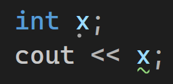
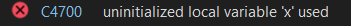
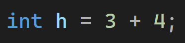
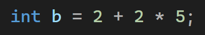
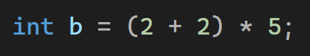
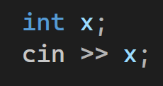

If we define a variable called x without giving it a value , then we tried to print its value .. like this :
We will get an error like this :
Here , the compiler tells us that we are trying to print a variable that has no value.
So we must give the variable a value when we define it at the beginning.
It is important to know that when we define a variable and give it a value , we start from right to left.
Example :
If we define a variable named h in this way :
The program first calculates 3 + 4 , then stores the result in h , so h becomes 7.
These are the math operations listed from highest priority to lowest priority :
First ( ) then * , / , % then + , - , and finally = .
If we define a variable named b in this way :
The value of b will be 12 , because multiplication is done before addition.
The program first did 5 * 2 , then added 2.
Now , what about this ?
The value of b will be 20 , why ?
Because the program first solved the parentheses ( 2 + 2 ) , then multiplied the result by 5.
Let's explain the modulus ( % ) operation.
What is modulus ( % ) ?
Modulus means the reminder after division.
We must know that the modulus operator ( % ) works only with integer numbers int.
I will give you four rules that summarize modulus ( % ) :
1. If a number is modulus a smaller number , the result is the reminder after division.
Example :
9 % 7 = 2 , because 9 / 7 ( integer division ) = 1 , and the reminder is 2.
2. If a number is modulus a bigger number , the result is the smaller number itself.
Example :
3 % 5 = 3.
3. Any number modulus itself , the result is 0.
Example :
6 % 6 = 0.
4. This case , 0 % 0 is not valid , so it gives an error.
Now we will learn how to ask the user to enter a value for a variable.
If we want to ask the user to give a value to a variable named x , we can define x without giving it an initial value.
To receive a value from the user , we use cin command , then write ( >> ) , followed by the variable name , then a semicolon.
Example :
When the program runs this line , it pauses and waits for the user to enter a value for x.
Remember : cout uses << , but cin uses >>.
What if we want the user to enter values for two variables at the same line ?
We can do it like this :
First , we defined two variables , then in the next line we received a value for each of them.
So when the program reaches this line , it waits for the user to enter a value for x , and after that it waits for the user to enter a value for y.